| < | > |
| Helsinki | [2003-11-25 13:33] |
| [mood Reaching the end of Norwegian Wood] [music None again] |
|
| Finally got out of Berlin for a few days, thanks to João and his career. 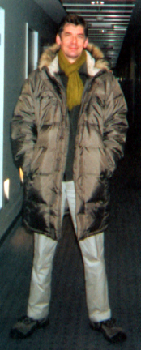 Here I am in my new winterwear from China via Gap. Apologies for the smiling blob. 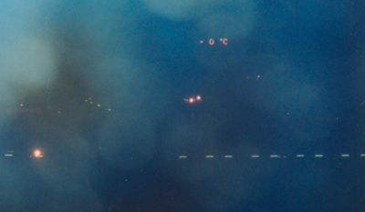 When we arrived it was minus zero degrees celsius. Wednesday and Thursday were grey and therefore photographless 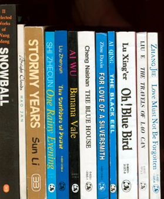 but I bought some books. Friday the sun shone. While João rushed off to check his video projector, I wandered around the hotel 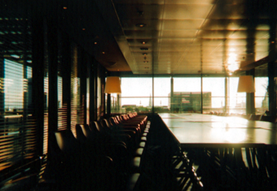 being artistic 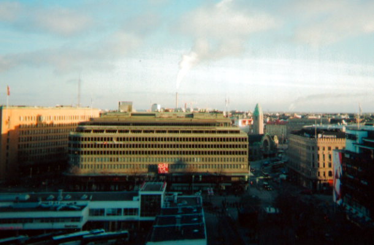 and touristy. 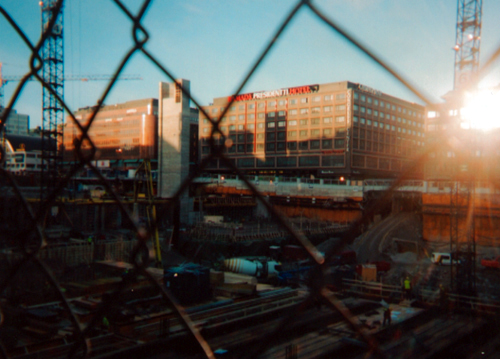 Outside the hotel they were building a new bus station. A big messy hole dug by metal teeth out of solid solid rock. 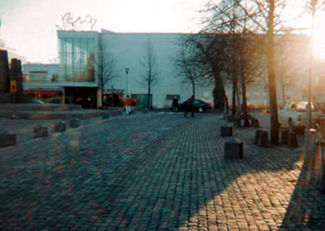 On the way over to Kiasma I did another sun-in-top-right shot, this time of the back of the old bus station. Prowling around in between beams of light. 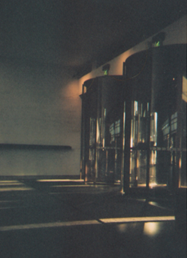 This is the front door of Kisma from the inside. I felt very self-conscious going down on one knee to take it. At the time it didn't look as good as this. 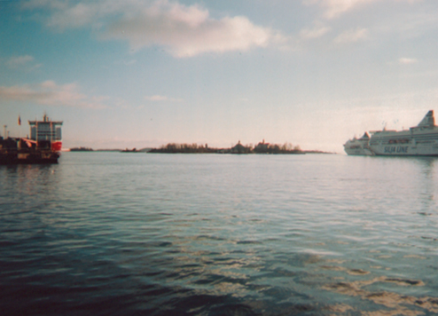 In the afternoon we took a ferry 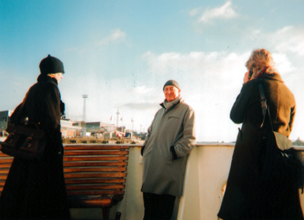 with Kathrina and her friend Judy 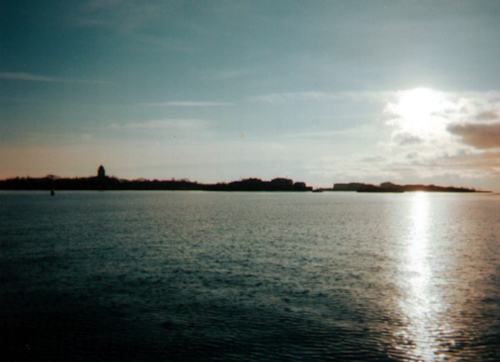 to Suomenlinna 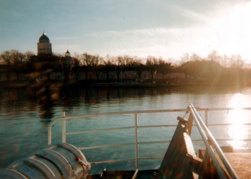 an old fortress island out in the bay. 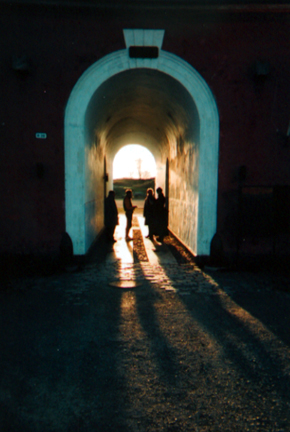 João had arranged for someone to meet us and show us around some art studios and offices there. 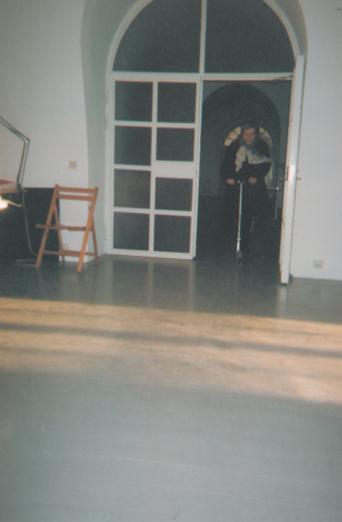 Kathrina jumped on one of those scooter things and whizzed around the rooms. I tried too. That was the first time I'd ever been on one. 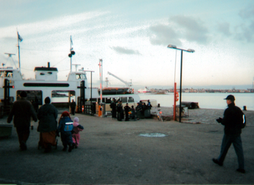 Then we went back. The opening was at 6. 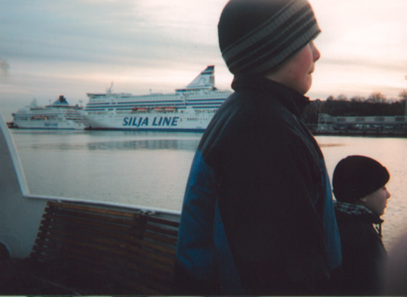 João was laughing at me when I took this. 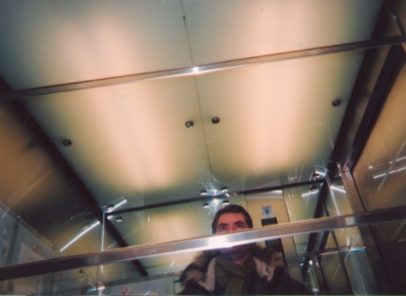 We were on the 3rd floor of the hotel, so there wasn't much time in the lift. I'd resisted taking this picture several times before finally weakening on the way over to Kiasma to join João for the after-opening dinner 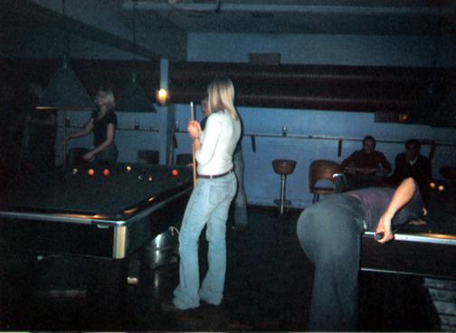 which ended in the SaunaBar. Saturday we went looking for a junk market 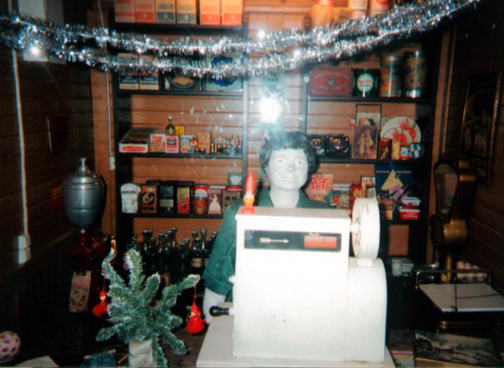 but only found this wide awake lady. Later we went to the famous Yrjonkatu Swimming Hall for sauna steam and naked swimming. 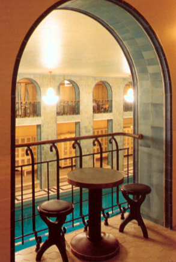 I tried to take some secret snaps from here 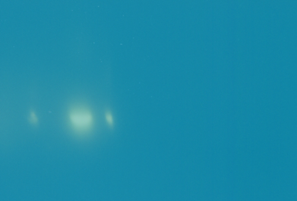 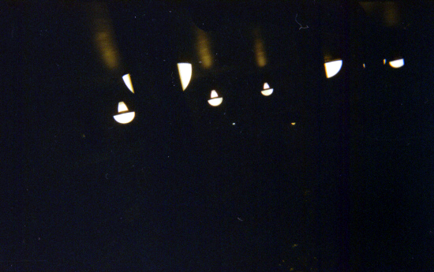 without much success. 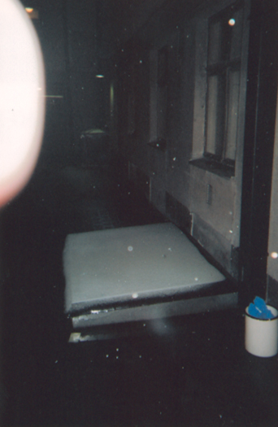 Outside it was snowing (that's my finger top left) 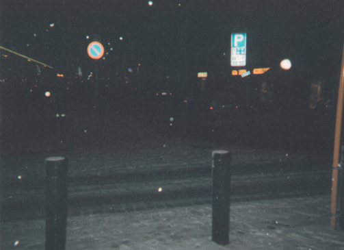 I got trigger happy and wasted some film. 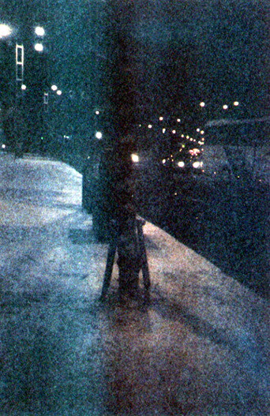 PhotoShop's autoadjust got creative on this one. 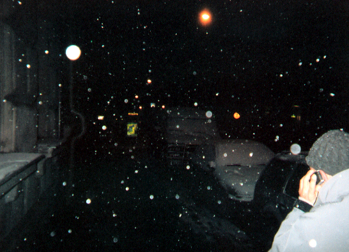 As we tottered our way downtown on icy pavements to meet the other artists at the Seahorse for dinner, João talked to our friend Armando who is Italian but lives in Dublin and was visiting Lisbon. I ran out of film. |
|